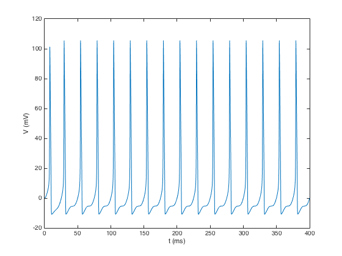
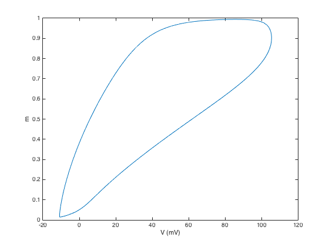
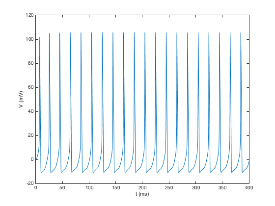
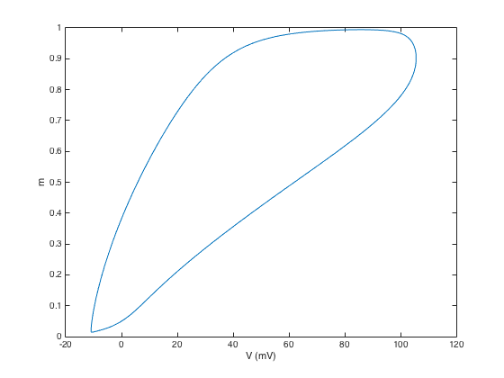
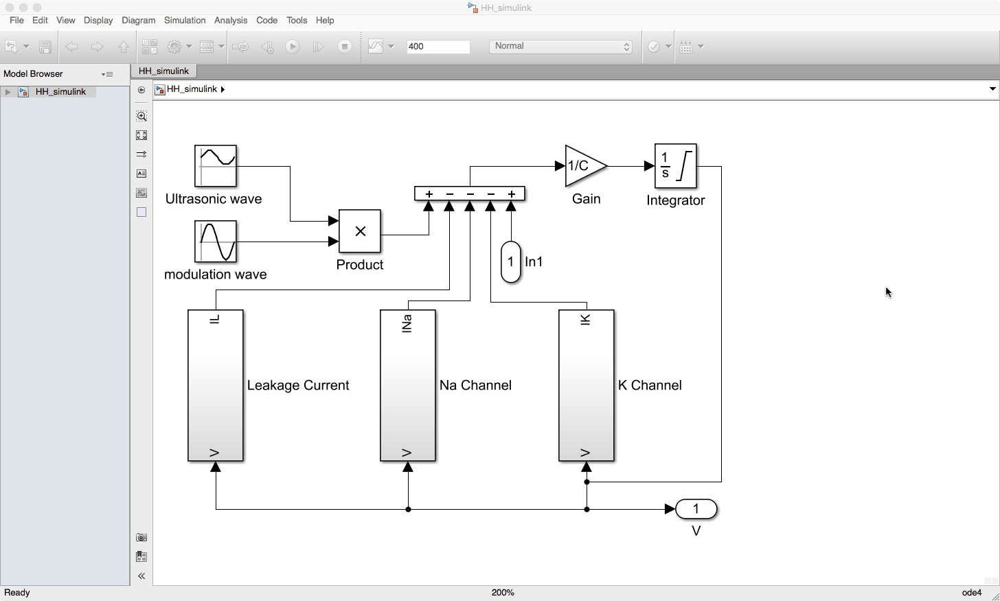

The matlab model for the paper: Yuan Y, Pang N, Chen Y, Wang Y, Li X (2017) A Phase-Locking Analysis of Neuronal Firing Rhythms with Transcranial Magneto-Acoustical Stimulation Based on the Hodgkin-Huxley Neuron Model Frontiers in Computational Neuroscience https://doi.org/10.3389/fncom.2017.00001 is available as a zip file in the supplementary material at the journal web site: http://journal.frontiersin.org/article/10.3389/fncom.2017.00001/full#supplementary-material (a file named "Data Sheet 1.zip" contains the matlab code and you should be prompted to save it on your computer when you follow the above link). After extracting the archive, starting matlab, then in the matlab command prompt changing to the extracted folder and typing "code" you should get these default graphs of voltage trajectory in time and phase plane which has the modulation frequency at 40 Hz:   changing the frequency to 50 Hz on line 16 produces a graph similar to the time voltage trace in figure 3B in the paper:   You can also open the simulink model which displays the model similarly to figure 1 in the paper. 